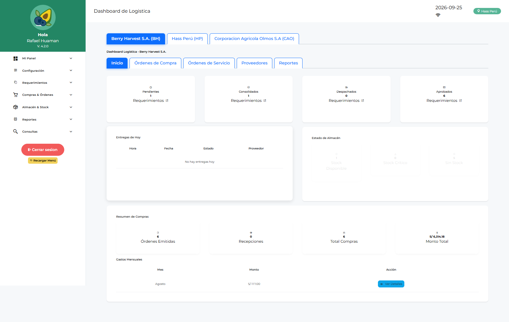
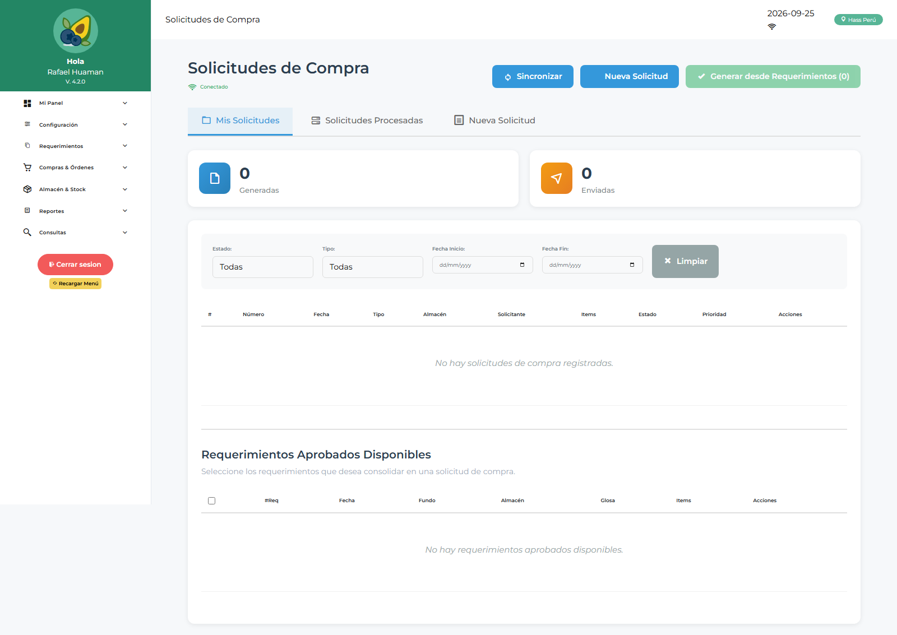
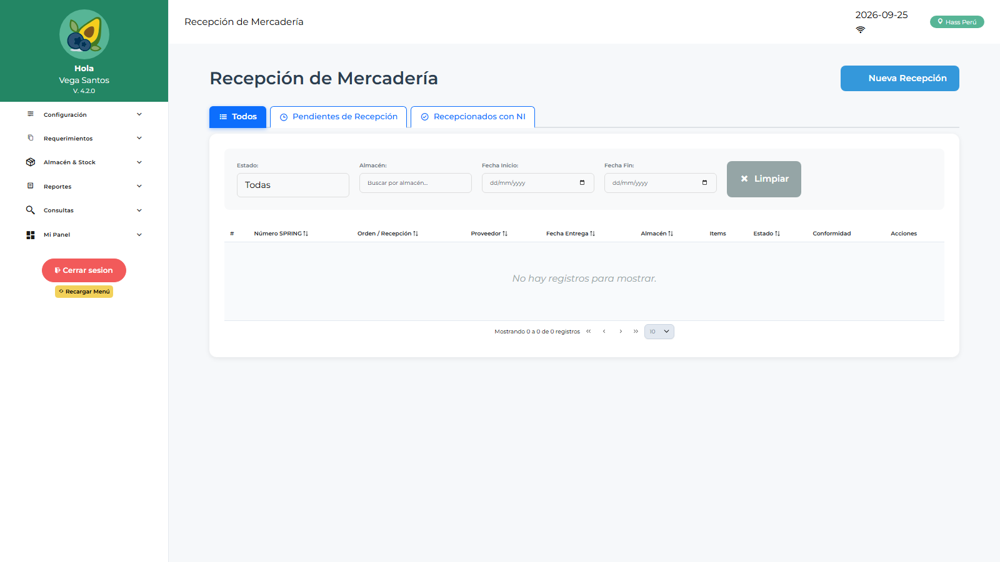

Manual de Usuario — Operador Logística (LOLOGIST)
| Campo | Valor |
|---|---|
| Código de rol | LOLOGIST |
| Nombre | Operador de Logística |
| Pantalla inicial | Dashboard Logística (/main/dashboard-logistica) |
| Video tutorial | ../video-tutoriales/VIDEO_TUTORIAL_LOLOGIST.html |
1. ¿Quién eres?
Eres el rol operativo más completo: ejecutas todo el ciclo de compras (consolidación, cotización, SC, OC/SS/OS) y operas el almacén (despachos, recepción, kardex, inventario, transferencias, devoluciones). No apruebas — ejecutas.
2. Acceso
Login → Dashboard Logística: vista de requerimientos aprobados pendientes de consolidar, compras en curso, OC por estado y alertas.

3. Pantallas disponibles
| Grupo | Pantallas |
|---|---|
| Panel | Dashboard Logística, Jef. Logística, Jef. Licitaciones, Compras, Operativo, Despacho |
| Configuración | Parámetros, Notificaciones |
| Requerimientos | Requerimientos, Saldo de Requerimiento |
| Compras | Solicitudes de Compra, Consolidación Requerimientos/Compras/Corporativa/Servicios, Cotizaciones, Órdenes de Compra, Solicitudes de Servicio, Órdenes de Servicio, Conformidad de Servicios |
| Almacén | Despachos, Recepción de Mercadería, Conformidad de Despacho, Kardex, Gestión de Inventario, Listas de Stock, Transferencias, Devoluciones a Proveedores y de Consumo, Reingresos, Evaluación de Proveedores |
| Maestros | Maestro Proveedores, Catálogo de Ítems |
| Reportes | Reportes Compras, Requerimientos, Saldos, Despachos, Logístico |
4. Procedimientos frecuentes
Del requerimiento aprobado a la Orden de Compra
- Consolidación de Requerimientos → agrupa líneas aprobadas.
- Solicitudes de Compra → genera la SC con adjuntos.
- Cotizaciones → registra cotizaciones de proveedores y selecciona la ganadora.
- Órdenes de Compra → genera la OC, envía a aprobación (JLOLOGIST/JEMLOGIST/FINANZAS/GERENTE).
- Sigue el estado en Órdenes de Compra hasta aprobada.

Consolidación corporativa
Consolidación Corporativa → combina requerimientos de varias empresas/fundos en una sola compra para mejorar precio.
Recepcionar mercadería
- Recepción de Mercadería → busca la OC aprobada.
- Ingresa cantidades recibidas, lotes/fechas si aplica, documentos.
- Confirma → actualiza stock y kardex automáticamente.

Despachar a un solicitante
Despachos → selecciona requerimiento/lista de stock → confirma salida → queda pendiente de Conformidad de Despacho por el solicitante.
Otros flujos de almacén
- Transferencias: mover stock entre almacenes.
- Devoluciones a Proveedores: registrar devolución por recepción con problemas.
- Devoluciones de Consumo: registrar material devuelto por usuarios.
- Evaluación de Proveedores: calificar desempeño del proveedor.
5. Restricciones
- No apruebas requerimientos por área ni OC/OS (es jefatura/finanzas/gerencia).
- No gestionas usuarios ni configuración.
6. Problemas comunes
| Problema | Solución |
|---|---|
| Una línea no aparece para consolidar | Debe estar aprobada por el área (APLOGIST) |
| No puedo emitir la OC | Revisa que la cotización ganadora esté seleccionada |
| Stock no cuadra | Revisa Kardex → movimientos; verifica recepciones/despachos pendientes |